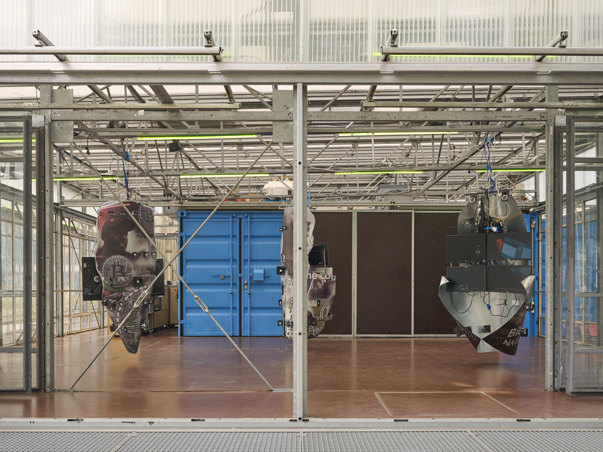
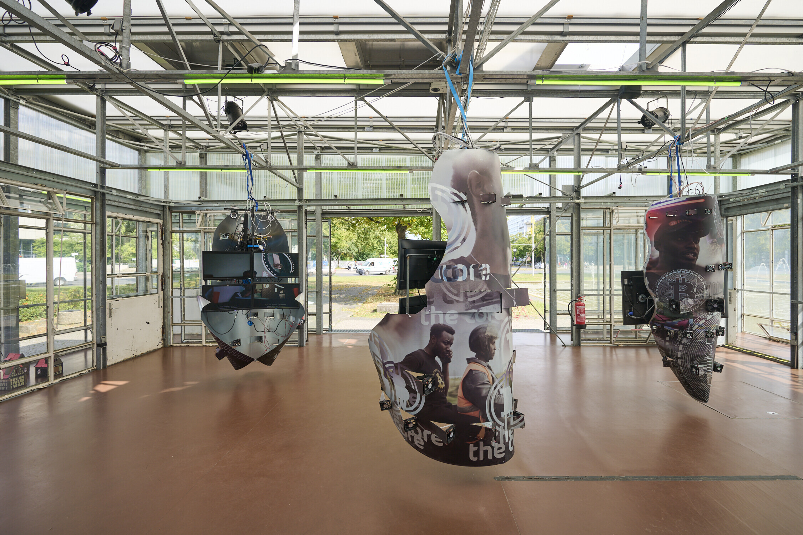
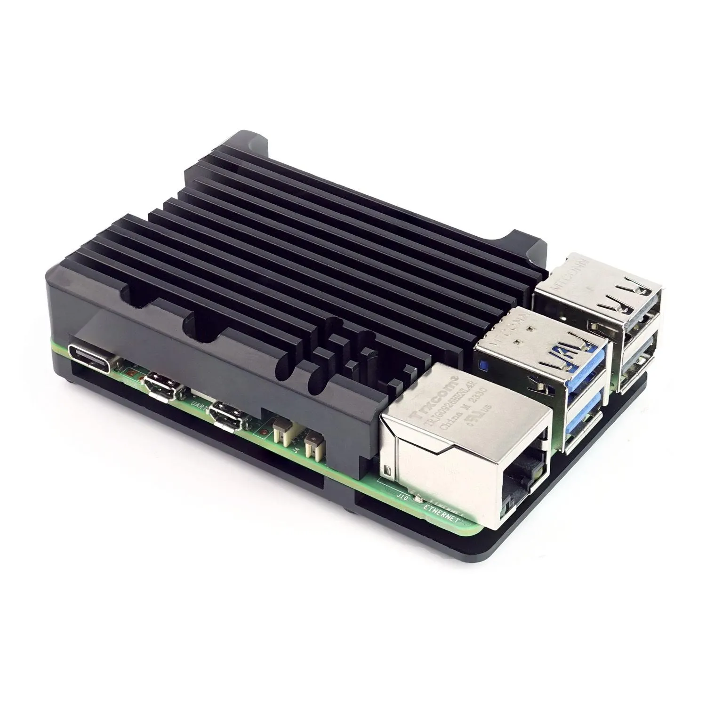
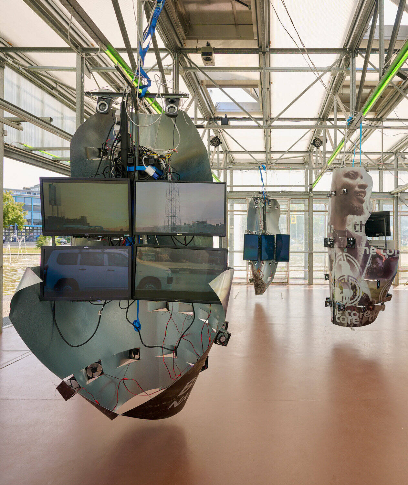

KitchenSync

KitchenSync is a plug-and-play synchronized video playback and automation system built on affordable Raspberry Pi hardware. Unlike expensive proprietary solutions like BrightSign ($300–2000+ per node), KitchenSync provides superior flexibility at under $200 per node, transforming displays into intelligent automation hubs capable of controlling external devices such as DMX lighting.
github.com/prismspecs/kitchenSync
KitchenSync synchronized 11 displays and allowed the artist to rotate them using motors connected to the devices.

